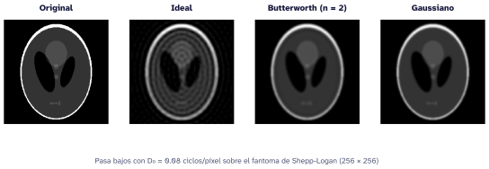

Filtros en frecuencia: de Ideal a Gaussiano
La idea
Filtrar en frecuencia es multiplicar: se lleva la imagen al dominio de la frecuencia con la transformada de Fourier 2D, se multiplica su espectro por una máscara \(H(u, v)\) y se vuelve al espacio con la transformada inversa. Es equivalente a convolucionar con un núcleo en el espacio, pero permite diseñar el filtro pensando directamente en qué frecuencias se quieren conservar.
\[ g(x, y) = \mathcal{F}^{-1}\big\{ H(u, v)\, \mathcal{F}\{f(x, y)\} \big\} \]
La distancia al centro del espectro
Con el espectro centrado (np.fft.fftshift), la distancia de cada punto al centro es
\[ D(u, v) = \sqrt{u^2 + v^2} \]
y, con np.fft.fftfreq, queda en ciclos por píxel, entre 0 y 0,5. Si se conoce el tamaño del píxel (PixelSpacing en el encabezado DICOM, en mm), las frecuencias se pueden expresar en ciclos por milímetro pasando d= a fftfreq, y el filtro deja de depender de la resolución de la imagen.
import numpy as np
def distancia(n, espaciado=1.0):
"""D(u, v) del espectro centrado: ciclos/píxel (espaciado=1) o ciclos/mm."""
f = np.fft.fftshift(np.fft.fftfreq(n, d=espaciado))
u, v = np.meshgrid(f, f)
return np.hypot(u, v)Tres pasa bajos con el mismo corte
| Filtro | \(H(D)\) | Transición |
|---|---|---|
| Ideal | \(1\) si \(D \le D_0\), \(0\) si no | Abrupta |
| Butterworth de orden \(n\) | \(\dfrac{1}{1 + (D/D_0)^{2n}}\) | Ajustable con \(n\) |
| Gaussiano | \(e^{-D^2 / 2D_0^2}\) | Suave, sin rebote |
def aplicar(img, h):
F = np.fft.fftshift(np.fft.fft2(img))
return np.real(np.fft.ifft2(np.fft.ifftshift(F * h)))
d = distancia(256)
ideal = (d <= 0.08).astype(float)
butterworth = 1 / (1 + (d / 0.08) ** 4) # orden 2
gaussiano = np.exp(-(d ** 2) / (2 * 0.08 ** 2))Qué le hacen a la imagen

A simple vista los tres suavizan. La diferencia aparece al mirar un perfil: el corte abrupto del filtro ideal hace que la imagen oscile junto a los bordes (efecto Gibbs), y esas oscilaciones se ven como anillos.

Lo que sigue
La misma estructura sirve para los filtros que vienen después en el curso: el pasa-banda (producto de un pasa bajos y un pasa altos) y el notch, que anula un punto del espectro y su simétrico para quitar un patrón periódico. En cada caso conviene comparar las mismas tres cosas: el espectro, la máscara y la imagen reconstruida.
Código de las figuras
"""Figuras del tutorial «Filtros en frecuencia: de Ideal a Gaussiano» (también las usan PSIM)."""
import sys
from pathlib import Path
AQUI = Path(__file__).resolve().parent
RAIZ = next(p for p in AQUI.parents if (p / "_quarto.yml").exists())
sys.path[:0] = [str(RAIZ / "recursos/marca/python"), str(RAIZ / "recursos/python")]
import matplotlib.pyplot as plt
import numpy as np
import caicedo_mpl as cm
from datos_ejemplo import shepp_logan
FIG = AQUI / "fig"
def distancia(n):
"""D(u, v): distancia al centro del espectro centrado, en ciclos/píxel."""
f = np.fft.fftshift(np.fft.fftfreq(n))
u, v = np.meshgrid(f, f)
return np.hypot(u, v)
def filtros(d, d0=0.08, orden=2):
return {
"Ideal": (d <= d0).astype(float),
f"Butterworth (n = {orden})": 1 / (1 + (d / d0) ** (2 * orden)),
"Gaussiano": np.exp(-(d ** 2) / (2 * d0 ** 2)),
}
def aplicar(img, h):
F = np.fft.fftshift(np.fft.fft2(img))
return np.real(np.fft.ifft2(np.fft.ifftshift(F * h)))
def main():
n, d0 = 256, 0.08
img = shepp_logan(n)
d = distancia(n)
hs = filtros(d, d0)
# 1 y 2, en versión para documentos (sin sufijo) y para diapositivas (-diapositiva, las usa PSIM).
for contexto, sufijo in [("documento", ""), ("diapositiva", "-diapositiva")]:
k = 1.5 if contexto == "diapositiva" else 1.0
# 1. Imágenes filtradas
cm.usar(contexto)
fig, ejes = plt.subplots(1, 4, figsize=(9.6 * 1.25, 2.75 * 1.3) if k > 1 else (9.6, 2.75))
for ax, (nombre, im) in zip(ejes, [("Original", img)] + [(n_, aplicar(img, h)) for n_, h in hs.items()]):
ax.imshow(im, vmin=0, vmax=1)
ax.set_title(nombre, fontsize=9.5 * k, loc="center")
ax.axis("off")
if k == 1:
fig.text(0.5, -0.02, f"Pasa bajos con D₀ = {d0} ciclos/píxel sobre el fantoma de Shepp-Logan (256 × 256)",
ha="center", fontsize=8.5, color=cm.TENUE["claro"])
cm.guardar(fig, FIG / f"filtros-imagenes{sufijo}"); plt.close(fig)
# 2. Función de transferencia en función de D
cm.usar(contexto)
dd = np.linspace(0, .3, 600)
fig, ax = plt.subplots(figsize=(6.4 * 1.3, 3.2 * 1.3) if k > 1 else (6.4, 3.2))
for nombre, h in filtros(dd, d0).items():
ax.plot(dd, h, label=nombre)
ax.axvline(d0, color=cm.TENUE["claro"], lw=.9)
ax.annotate("D₀", (d0, 1.02), xytext=(4, 0), textcoords="offset points", color=cm.TENUE["claro"], fontsize=9 * k)
ax.set_xlabel("D (ciclos/píxel)"); ax.set_ylabel("H(D)")
ax.set_ylim(-.03, 1.1); ax.set_xlim(0, .3)
ax.set_title("Tres pasa bajos con la misma frecuencia de corte")
ax.legend(loc="upper right")
cm.guardar(fig, FIG / f"filtros-transferencia{sufijo}"); plt.close(fig)
# 3. Perfil a lo largo de una fila: el filtro ideal produce anillos (efecto Gibbs)
cm.usar("documento")
fila = n // 2
x = np.arange(n)
fig, ax = plt.subplots(figsize=(6.4, 3.2))
ax.plot(x, img[fila], color=cm.TENUE["claro"], lw=1.2, label="Original")
ax.plot(x, aplicar(img, hs["Ideal"])[fila], label="Ideal")
ax.plot(x, aplicar(img, hs["Gaussiano"])[fila], color=cm.SERIES["claro"][2], label="Gaussiano") # mismo color que en la otra figura
ax.set_xlim(10, 130)
ax.set_xlabel("Columna (píxel)"); ax.set_ylabel("Intensidad")
ax.set_title("Perfil de la fila central: el ideal oscila junto a los bordes")
ax.legend(loc="upper right")
cm.guardar(fig, FIG / "filtros-perfil"); plt.close(fig)
if __name__ == "__main__":
main()